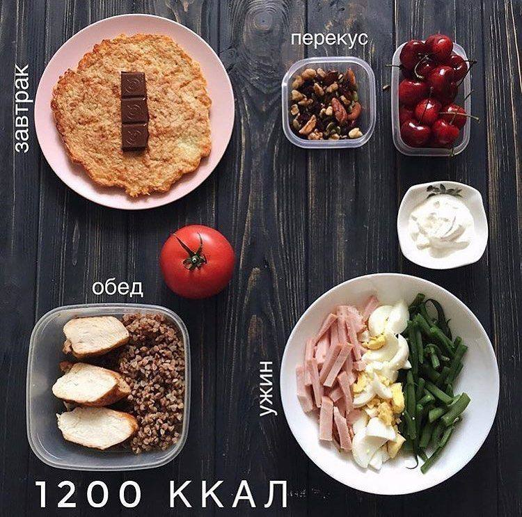

Правильное питание – это одна из тех привычек, которые позволяют нам сохранять собственное здоровье, поддерживать нормальный вес и быть бодрыми каждый день. Придерживаясь определённых правил можно легко откажетесь от вредных продуктов и полностью перейти на ПП.
